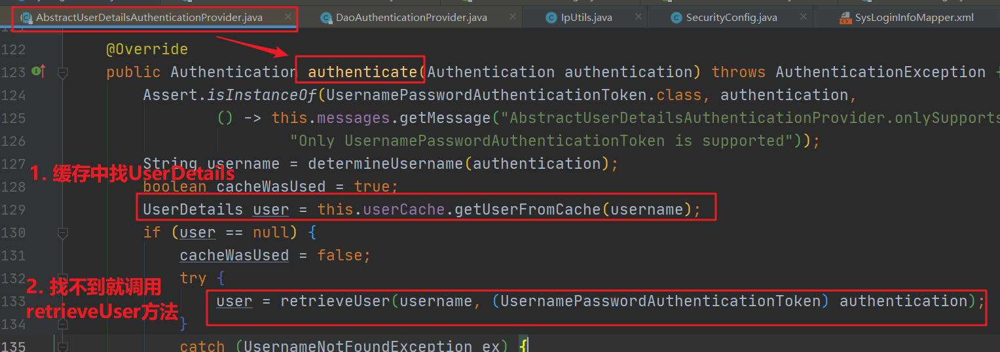

SpringSecurity认证流程
最近在学习 Ruoyi 后台管理框架源码，看到了关于 SpringSecurity 安全认证方面的东西，感觉不易理解，因此花了点时间时间看了源码，深入了解一下认证流程
SpringSecurity配置
我们需要做一定的配置才能让 SpringSecurity 的安全认证起到作用，下面我们定义一个 SecurityConfig.java 类，它继承了 WebSecurityConfigurerAdapter，如下：
1 |
|
Step.1）同时需要重写它的 configure(HttpSecurity http) 方法：
1 |
|
配置的相关解释如下：
- 项目是前后端分离的，无需用到 session，因此修改与 session 相关的配置
- 定义哪些请求需要进行认证，哪些请求可以放行
- 定义过滤器（重要，如何从请求中拿到认证信息就靠它了）
- 在项目中过滤器
authenticationTokenFilter继承了OncePerRequestFilter - 继承了
OncePerRequestFilter的类在每次请求只执行一次
- 在项目中过滤器
Step.2）此外我们还需要重写的它的 configure(AuthenticationManagerBuilder auth) 方法：
1 |
|
在这里我们使用了一个 UserDetailsService 对象（重要，判断用户认证是否成功也就是账号密码是否正确就靠它了）
小总结：目前我们提到了两个重要，下面的文章就是围绕这两个重要进行展开的。下面我们将先阐述用户认证流程，然后在梳理如何拿到认证信息。
用户认证流程
用户认证所关注是用户所输入的账号信息是否正确，如果账号信息正确将返回一个凭证，下面的认证流程将围绕这个关注点展开。
「发送认证请求」
我们发送请求 [post] /login，传递 username、password 等数据到服务器，服务器收到请求，来到相应的 controller 处理方法
1 |
|
在这里调用 loginService 的 login方法，其中内部是具体的验证登录逻辑，验证通过后返回一个 token，也就是一个凭证，用来表示我们已近认证成功（登录成功）。
「调用认证方法」
接下来进入 loginService.login()内
1 |
|
其中 authenticationManager.authenticate() 就是我们需要调用的认证方法，如果失败则抛出异常。
这个方法以一个 UsernamePasswordAuthenticationToken 类作为参数，它拥有两个构造方法，如下：
只有两个参数的构造方法表示「当前没有认证」
1
public UsernamePasswordAuthenticationToken(Object principal, Object credentials)
有三个参数的构造方法表示「当前已经认证完毕」，后面校验成功后会用到它
「源码分析认证方法」

上面的流程图就是认证方法的一个大概过程，下面我们将通过源码来查看这个认证方法 AuthenticationManager.authenticate() 到底干了什么（深入源码调用堆栈有点啰嗦，可以直接看第5步的小总结）。
Step.1）实现了AuthenticationMananger的ProviderManger调用接口的authenticate方法

Step.2）然后遍历所有的 AuthenticProvider，其中的supports方法用来判断 provider 是否支持 toTest。
而源码中的 toTest 类，就是我们认证传递的 UsernamePasswordAuthenticationToken，通过遍历我们发现 AbstractUserDetailsAuthenticationProvider 支持 UsernamePasswordAuthenticationToken，判断provider是否合适的源码如下：
AbstractUserDetailsAuthenticationProvider.java
1 |
|
Step.3）找到合适的Provider后，在本例中也即是AbstractUserDetailsAuthenticationProvider（抽象类），会调用provider 的authenticate 方法

Step.4）从下面可以看到 retrieveUser 方法返回一个 UserDetails
Step.5）接着深入，可以发现 DaoAuthenticationProvider 继承了 AbstractUserDetailsAuthenticationProvider，所以DaoAuthenticationProvider 才是真正的实现类，他会调用 retrieveUser 方法，接着调用 loaderUserByUsername() 方法
看到 loaderUserByUsername()，应该就很熟悉了，因为这就是我们自己实现 UserDetailsService 接口，自定义的认证过程。
小总结：源码分析了一堆，其实这个认证方法的真正目的是调用 UserDetailsService 类的 loaderUserByUsername()
「实现校验逻辑」
文章开头我们提到了两个重要，第二个重要就是 UserDetailsService，认证就是通过它的 loaderUserByUsername() 方法是否认证成功。
UserDetailsService 是一个接口，同时要求我们返回一个 UserDetail 对象，我们需要自己实现认证校验逻辑，如下：
1 |
|
上面就是我们自己的认证逻辑：
- 通过一个唯一标识 username 查询用户
- 当所有校验都通过后就会调用 createLoginUser 方法
- 装填用户拥有的权限以及从数据库中获取的密码，
- 返回一个 LoginUser 对象，而这个对象实现了 UserDetails接口。
「源码分析校验逻辑」
下面我们通过源码查看获取到 UserDetails 后 SpringSecurity 还做了什么（如果没看之前的源码分析可以直接看第2步的小总结）
Step.1）我们回看 AbstractUserDetailsAuthenticationProvider 的 authenticate 方法

Step.2）接着深入，可以发现createSuccessAuthentication方法创建了一个UsernamePasswordAuthenticationToken，并且他的构造方法有三个参数，这表明这个token是已近认证过后的

小总结：认证成功后，我们调用 UsernamePasswordAuthenticationToken 具有三个参数的构造方法，也就是代表认证成功的构造函数，然后将构造的对象返回去。
「认证结束」
至此认证已经结束，我再回到 loginService.login()这个我们自己写的方法内，认证方法 authenticationManager.authenticate() 认证成功后会返回一个 Authentication，然后就可以利用这个 Authentication 生成一个 token。
loginService.java
1 | return tokenService.createToken((LoginUser) authenticate.getPrincipal()); |
接着回到前面第二步controller调用的 loginService.login()，这时它已近拿到了 token ，于是将其返回到前端。前端收到相应后，就可以把这个token存在本地，以后每次访问请求时都带上这个token 信息。
1 |
|
获取认证信息
文章开头提到了两个重要，下面我们将梳理第一个重要，也就是如何从请求中拿到认证信息。
上面说到认证成功后每次发送请求都带上 token 信息，但是为啥带上这个 token 呢？在之前的 SpringSecurity 配置中有如下配置
1 | .antMatchers("/login", "/captchaImage").anonymous() |
因此对于 /login请求没遭受拦截，而其他请求都是要被拦截的。
「拦截器」
之前 /login 我们配置了不拦截，因此手动调用 authenticationManager.authenticate() 来进行认证，而现在被拦截的请求又是如何判断它是否认证过了呢？
对于被拦截的请求，如果它带有 token，我们会手动将这个 token 转换为认证信息 UsernamePasswordAuthenticationToken 并放入本次请求的上下文中，否则啥事都不做。而我们文章开头所配置的
1 | http.addFilterBefore(authenticationTokenFilter,UsernamePasswordAuthenticationFilter.class); |
拦截器就是起这个作用，具体实现如下（后面称这个为 jwtFilter）。
JwtAuthenticationTokenFilter.java
1 |
|
我们关注代码中 3.2）即可。在 token 正确后，我们使用用有三个参数的构造方法创建UsernamePasswordAuthenticationToken 对象，前面也说了，这代表已经经过认证，然后通过 SecurityContextHolder.getContext().setAuthentication() 为本次请求上下文设置一下认证信息。
这样后面 SpringSecurity 看到存在这个认证信息就会判断本次请求已经认证成功。
「源码分析拦截流程」
为了更深刻的了解 SpringSecurity 内部是如何被拦截请求是否认证成功，我们接下来通过源码具体分析一下流程。
再次之前先介绍一个类 FilterSecurityInterceptor：是一个方法级的权限过滤器，基本位于过滤链的最底部，因此请求到来时它一定会执行，下面来看看源码。

下面来打个断点，查看一下

这说明来到beforeInvocation方法时我们前面编写的jwtFilter已经被执行，认证信息已近被手动添加过了

进入beforeInvocation()里面，由调试信息可以看到当前请求需要被认证
接着我们进入authenticateIfRequired方法的内部

因为我们之前 jwtfilter 手动添加了认证信息，所以authenticateIfRequired就直接返回了authentication，表示认证通过。
如果之前在 jwtfilter 被拦截的请求不存在 token，我们就不会手动设置认证信息，因此调用 authenticationManager.authenticate();进行验证时，中途一定会抛出异常，导致此次请求失败被拦截
至此也没啥好讲了，filterInvocation.getChain().doFilter() 调用我们的后台服务了

参考
https://www.cnblogs.com/ymstars/p/10626786.html